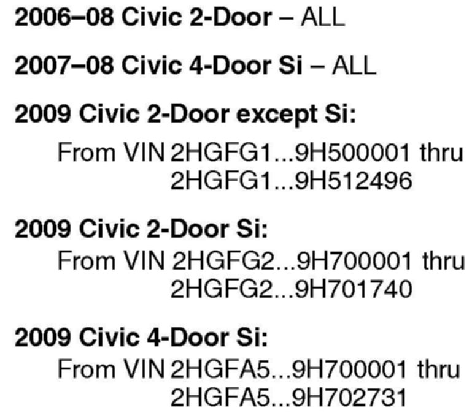
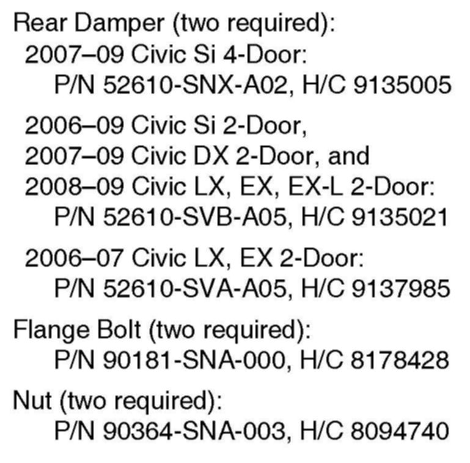
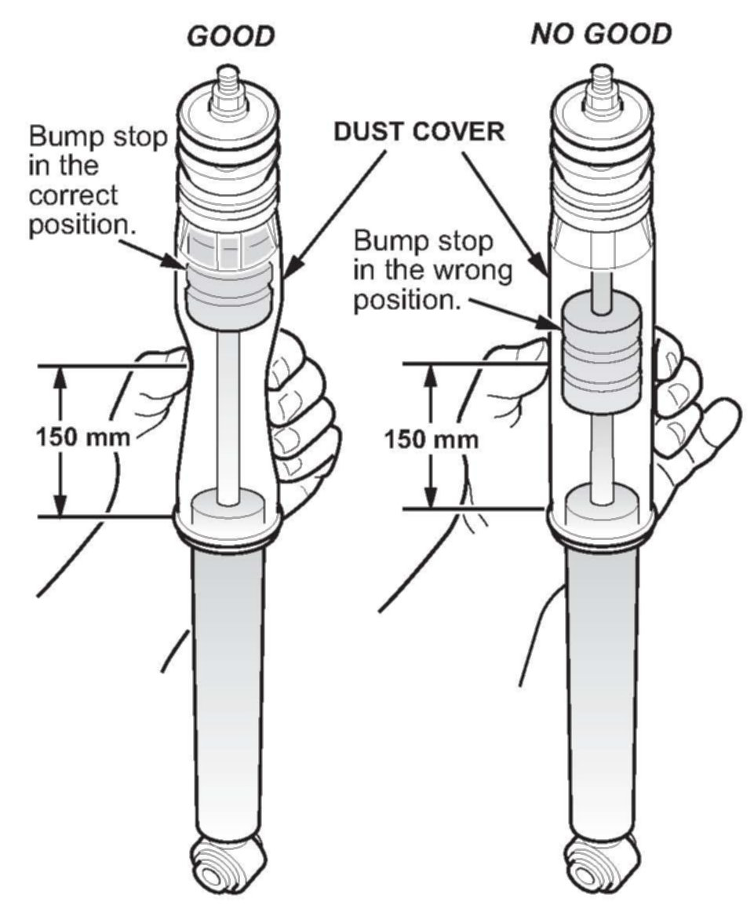

Suspension - Rear Suspension Thump/Knock/Clunk
09-005February 6, 2009
Applies To:
See VEHICLES AFFECTED
Thump, Pop, Clunk, or Knock from the Rear Suspension When Driving Over Bumps
SYMPTOM
There is a thump, pop, clunk, or knock coming from the rear suspension while driving over a bump.
PROBABLE CAUSE
The bump stop has come loose from its top position and slid down.

VEHICLES AFFECTED
CORRECTIVE ACTION
Replace both rear dampers, their mounting bolts, and their nuts.

PARTS INFORMATION
WARRANTY CLAIM INFORMATION
In warranty: The normal warranty applies.
Operation Number: 417101
Flat Rate Time: 0.6 hour
Failed Part: P/N 52610-SVB-A04
H/C 8259517
Defect Code: 06201
Symptom Code: 04217
Skill Level: Repair Technician
Out of warranty:
Any repair performed after warranty expiration may be eligible for goodwill consideration by the District Parts and Service Manager or your Zone Office. You must request consideration, and get a decision, before starting work.
DIAGNOSIS
1. Drive the vehicle over a moderately sized speed bump or a bumpy road.
^ If you hear a thump, pop, clunk, or knock, go to step 2.
^ If you do not hear a thump, pop, clunk, or knock, this bulletin does not apply. Continue with normal troubleshooting procedures.
2. Raise the vehicle on a lift.

3. Use your fingers to squeeze the dust covers of both rear dampers at about 150 mm from the bottom of the dust covers.
Do the dust covers compress when squeezed?
Yes - This bulletin does not apply, continue with normal troubleshooting.
No - Go REPAIR PROCEDURE.
REPAIR PROCEDURE
Replace both rear dampers and their mounting bolts and nuts:
^ Refer to page 18-44 of the 2006-2009 Civic Service Manual, or
^ Online, enter keywords DAMPER REPLACE, then select Rear Damper Replacement from the list.